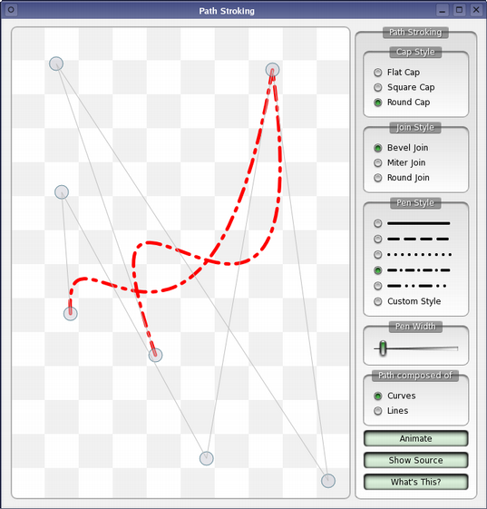

Path Stroking
The Path Stroking example shows various types of pens that can be used with QPainter.

Qt defines cap styles for how the end points are treated and join styles for how path segments are joined together. A standard set of predefined dash patterns are also included that can be used with QPen.
In addition to the predefined patterns available in QPen we also demonstrate direct use of the QPainterPathStroker class which can be used to define custom dash patterns. You can see this by enabling the Custom Pattern option.